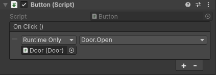
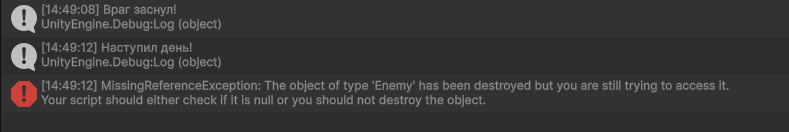

2.4 События в Unity
Мы уже вскользь упоминали события в разделе поверхность Unity, когда пытались реализовать открытие двери, когда к ней подходит игрок. Помните? Я тоже думаю, что нет. Так что в этот раз попробуем хорошенько разобраться, что же это такое и как это использовать.
Что такое событие?
Событие — это способ сообщить объектам в игре: «Эй, что-то произошло!». Например:
- Игрок подобрал монету.
- Дверь открылась.
- Здоровье упало до нуля.
Вместо того чтобы постоянно проверять «А не случилось ли что?», объекты могут подписаться на событие и реагировать, когда оно произойдёт.
Предположим, у нас на сцене есть дверь, которая должна открываться по нажатию кнопки. Давайте рассмотрим следующие примеры реализации:
1. Без использования событий:
public class Button : MonoBehaviour
{
public Door door; // Жёсткая привязка к двери!
void OnMouseDown()
{
door.Open(); // Прямой вызов
}
}
В этой реализации мы не используем события, так что подумаем, что нужно, чтобы в одном скрипте вызывался метод из другого скрипта? Правильно, нужно, чтобы в одном из них была ссылка на другой. Кнопка теперь имеет ссылку на дверь, что добавляет ненужных зависимостей. К тому же, метод Open() должен быть публичным, что уже нарушает инкапсуляцию.
2. С использованием UnityEvent
// Button.cs
using UnityEngine;
using UnityEngine.Events; // Для UnityEvent
public class Button : MonoBehaviour
{
public UnityEvent OnClick; // Событие, настраиваемое в инспекторе
void OnMouseDown()
{
OnClick.Invoke(); // Вызываем событие
}
}
// Door.cs
public class Door : MonoBehaviour
{
private void Open()
{
transform.position += Vector3.up * 2; // Просто двигаем дверь вверх
}
}
После добавления скрипта Button.cs на кнопку, в инспекторе у кнопки появится окошечко, в котором мы можем указать, какие методы должны подписаться на событие OnClick. Нажмем на "+", перетащим туда наш объект двери и выберем из выпадающего окна Door.Open(). Должно получиться так:

Итак, после всего этого можно задать вполне логичный вопрос: да, зависимости это плохо, но зачем нам нужны события, если для них нужно делать столько лишних действий? И до этого ведь работало. Давайте по порядку. Сначала разберемся, что мы тут натворили:
- В классе Button мы добавили
UnityEvent OnClickи поместили его вOnMouseDown. Он будет кричать всем, кто на него подписался: "Случилось невероятное! Игрок нажал на кнопку! Делайте то, что должны делать!" - В классе Door мы описали простой метод открывания двери. Обратите внимание, теперь он private, все в порядке.
- В инспекторе на кнопке мы указали, что на событие
OnClickдолжен реагировать методOpen()из класса Door.
Теперь каждый раз, когда игрок нажмет на кнопку, вызовется событие OnClick. Таким образом вызовутся все, кто на него подписан, а подписан у нас пока только метод открывания двери, так что дверь, правильно, откроется.
Мы избавились от зависимостей и проблем с инкапсуляцией. А еще знаете что? Допустим, что при открывании двери должен проигрываться звук. И включаться свет. И спавниться враги. Вы представляете, сколько нужно будет ссылок на разные объекты, если бы мы не использовали события? А так мы можем просто в инспекторе нажать еще раз "+", перекинуть нужный объект (управляющий звуком, светом, спавном врагов и так далее) и указать метод, который должен вызываться, то есть подписать все эти методы на событие.
Чем меньше скрипты знают друг о друге - тем лучше.
Типы событий в Unity
1. Встроенные события в Unity
На самом деле, вы уже давно работаете с событиями, сами того не подозревая. Ведь уже известные и привычные вам OnTriggerEnter(), OnDestroy() и подобные - это тоже события, которые встроены в Unity, их можно спокойно использовать без объявления.
2. Action
Action - это что-то вроде указателя на функцию. В него можно поместить другие методы, которые будут вызваны при вызове Action. Вот простой пример, в котором при нажатии на ЛКМ в консоль будет выводиться текст Hello!:
public class Test : MonoBehaviour
{
private Action exampleAction; // Создаем Action
private void Start()
{
exampleAction = SayHello; // Кладем в Action метод SayHello()
}
private void Update()
{
if (Input.GetMouseButtonDown(0))
{
exampleAction.Invoke();
// Каждый кадр проверяется, не нажал ли игрок ЛКМ.
// Если нажал, то вызывается то, что внутри Action
}
}
private void SayHello()
{
Debug.Log("hello");
}
}
Для присваивания методов в Action можно использовать как +=, то есть подписать методы на Action, так и просто =. Использование знака равно удалит все предыдущие подписки, теперь в нем будет лежать только один новый метод, который мы присвоили. Вызов подписчиков происходит уже знакомым нам образом, через .Invoke().
Давайте рассмотрим пример посложнее и поймем, почему Action лучше не использовать для наших задач.
Допустим, в нашей игре при наступлении дня враги засыпают. Наступление дня - глобальное событие. Создадим скрипт, который будет отвечать за такие события, назовем его GlobalEventManager (для простоты не будем прописывать лишнюю логику, ограничимся нажатиями кнопки и выводом сообщений в консоль):
using System;
using UnityEngine;
public class GlobalEventManager : MonoBehaviour
{
public static Action OnDayStart; // Событие начала дня
void Update()
{
if (Input.GetKeyDown(KeyCode.D))
{
Debug.Log("Наступил день!");
OnDayStart.Invoke(); // Вызываем всех подписчиков
}
}
}
Теперь создадим скрипт врага, который и будет подписываться на события глобального менеджера:
public class Enemy : MonoBehaviour
{
void Start()
{
GlobalEventManager.OnDayStart += Sleep; // Подписка на событие начало дня
}
void Sleep()
{
Debug.Log("Враг заснул!");
GetComponent<Rigidbody>().linearVelocity = Vector3.zero;
// Тут может быть другая логика, просто для примера
// обратимся с какому-нибудь компоненту объекта
}
}
При нажатии клавиши D (будто бы наступил день), в консоль выведется сообщение Враг заснул!. Вроде бы все нормально. Но что будет, если мы ночью убьем этого врага, а потом наступит день? Будет это:

Объект врага удалился, однако подписка на Action все еще осталась. Для того, чтобы этого не произошло, необходимо в OnDestroy() врага вручную отписываться от события при помощи -=:
void OnDestroy()
{
GlobalEventManager.OnDayStart -= Sleep; // Отписываемся при смерти
}
Если событий будет много, то мы обязательно забудем где-нибудь от чего-нибудь отписаться, что вызовет большое количество ошибок, которые будет трудно отследить. В нашем примере все прошло относительно успешно, ведь вызвалась ошибка, а она могла и не появиться. Кроме того, при использовании Action любой внешний код может перезаписать все события, используя знак равно или обнулить все подписки (= null).
3. event Action
event Action это защищенная версия Action, которая:
- Запрещает перезапись событий извне (нельзя использовать знак равно)
- Позволяет только добавлять/удалять подписчиков (через
+=и-=)
Мы не можем вызвать (.Invoke()) событие извне, а только внутри класса, где оно объявлено. Снаружи мы можем только подписываться и отписываться.
При использовании event Action мы с очень высокой вероятностью будем ловить баги, вызванные тем, что мы забыли где-то отписаться от события, потому что подписываться и отписываться нам может понадобиться не только в Awake() и OnDestroy().
Еще один важный момент, который я до сих пор не упомянул: при вызове события нам всегда нужно проверять, есть ли у него вообще подписчики, иначе мы словим ошибку NullReferenceException. Для этого существует короткая запись, нужно поставить знак ? перед точкой в вызове:
if (OnDayStart != null)
{
OnDayStart.Invoke();
}
// Эквиевалентно
OnDayStart?.Invoke();
Обновленный работающий код с event Action:
// GlobalEventManager.cs
using System;
using UnityEngine;
public class GlobalEventManager : MonoBehaviour
{
public static event Action OnDayStart;
void Update()
{
if (Input.GetKeyDown(KeyCode.D))
{
Debug.Log("Наступил день!");
OnDayStart?.Invoke();
}
}
}
// Enemy.cs
using UnityEngine;
public class Enemy : MonoBehaviour
{
void Start()
{
GlobalEventManager.OnDayStart += Sleep;
}
void Sleep()
{
GetComponent<Rigidbody>().linearVelocity = Vector3.zero;
Debug.Log("Враг заснул!");
}
private void OnDestroy()
{
Debug.Log("Отписка!");
GlobalEventManager.OnDayStart -= Sleep;
}
}
4. UnityAction
UnityAction - это тот же event Action, с небольшими отличиями:
- Может принимать только 4 параметра (против 16 у
event Action) - Можно передавать в
AddListener()
Технически это все еще event, так что он имеет преимущества event Action в виде защиты от изменения извне. Этот вариант наиболее предпочтительный в том случае, если нам просто нужно событие, которое мы будем настраивать в коде.
5. UnityEvent
А вот UnityEvent, как бы это противоречиво не звучало, это уже не event вовсе, а отдельный класс. Поэтому его можно вызвать извне, от этого он не защищен.
Мы все еще следим за тем, чтобы в нужный момент методы отписывались и прописываем это напрямую в коде. Но эти проблемы запросто решаются с использованием UnityEvent. Давайте перепишем наш код:
// GlobalEventManager.cs
using UnityEngine;
using UnityEngine.Events;
public class GlobalEventManager : MonoBehaviour
{
public static UnityEvent OnDayStart = new UnityEvent();
void Update()
{
if (Input.GetKeyDown(KeyCode.D))
{
Debug.Log("Наступил день!");
OnDayStart?.Invoke();
}
}
}
// Enemy.cs
using UnityEngine;
public class Enemy : MonoBehaviour
{
void Start()
{
GlobalEventManager.OnDayStart.AddListener(Sleep);
}
void Sleep()
{
GetComponent<Rigidbody>().linearVelocity = Vector3.zero;
Debug.Log("Враг заснул!");
}
}
Для добавления подписчиков на UnityEvent нужно использовать AddListener() вместо +=. Обратите внимание, что мы нигде не отписывались, но при этом при смерти врага и наступлении дня все работает, никаких ошибок, враг уничтожился и сам отписался от события без нашего участия.
Этот подход хорош еще и тем, что нам необязательно прописывать в коде подписчиков, ведь мы можем делать это через инспектор, как я показывал в самом первом примере с дверью и кнопкой.
Передача параметров
События могут передавать различные значения в вызовы подписчиков. Допустим, мы хотим сделать так, чтобы на экране отображалось количество оставшихся врагов.
public class GlobalEventManager
{
// Событие с передаваемым значением типа int
public static UnityEvent<int> OnEnemyKilled = new UnityEvent<int>();
public static void SendEnemyKilled(int remainingCount)
{
// Вызываем событие и передаем туда число оставшихся врагов
OnEnemyKilled?.Invoke(remainingCount);
}
}
public class RemainingKillsText : MonoBehaviour
{
private void Start()
{
// Подписываемся на событие
GlobalEventManager.OnEnemyKilled.addListener(EnemyKilled);
}
private void EnemyKilled(int remainingCount)
{
GetComponent<Text>().text = "Remain" + remainingCount;
}
}
SendEnemyKilled() будет вызывать какой-нибудь класс, отвечающий за врагов и передавать туда количество оставшихся в живых. При смерти врага вызовется событие OnEnemyKilled, принимающее int. На него подписался метод EnemyKilled(int remainingCount) класса RemainingKillsText, который висит на нашем объекте, отображающем текст. Через UnityEvent<int> OnEnemyKilled он получит количество оставшихся врагов и обновит свой текст.
Передавать можно примитивы (int, float, bool...), ссылки на Unity-объекты (GameObject, Transform), векторы, цвета и спрайты, и вообще все, что угодно.
Итог
Итак, мы выяснили, что такое события и как с ними работать. События полезно применять:
- Для уменьшения связности кода (Когда объекты должны взаимодействовать, но не должны знать друг о друге напрямую)
- Вместо постоянных проверок в Update() (Когда нужно мгновенно реагировать на изменения (здоровье, смерть, подбор предметов) без проверок в
Update()) - Для настройки логики в инспекторе (Когда дизайнеры или должны настраивать связи между объектами без правки кода)
- Для временных или динамических связей (Когда объекты могут подписываться/отписываться во время выполнения (например, временные эффекты, модификаторы))
Какие события применять?
Если нужно просто событие, которое настраивается в коде и защищено от изменения извне - UnityAction.
Если нужно событие, которое легко настраивается через инспектор - UnityEvent.
Задание
Прекрасно, если вы дочитали до конца и пытались параллельно проверять примеры в Unity и играться с ними (если нет - сделайте это), вы уже понимаете, как все это работает и, скорее всего, сможете легко реализовать использование событий на простом примере. Однако дальше нас ждет нечто страшное и неизвестное, а именно Event Bus. Так что заданием будет прописывать события для него. Их будет достаточно, поверьте.